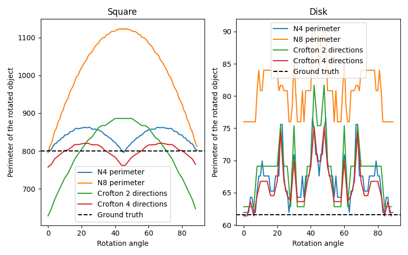

Source
SourceNote
Click here to download the full example code or to run this example in your browser via Binder
Measure perimeters with different estimators¶
In this example, we show the error on measuring perimeters, comparing classic approximations and Crofton ones. For that, we estimate the perimeter of an object (either a square or a disk) and its rotated version, as we increase the rotation angle.
import matplotlib.pyplot as plt
import numpy as np
from skimage.measure import perimeter, perimeter_crofton
from skimage.transform import rotate
# scale parameter can be used to increase the grid size. The resulting curves
# should be smoothed with higher scales
scale = 10
# Construct two objects, a square and a disk
square = np.zeros((100*scale, 100*scale))
square[40*scale:60*scale, 40*scale:60*scale] = 1
[X, Y] = np.meshgrid(np.linspace(0, 100*scale), np.linspace(0, 100*scale))
R = 20 * scale
disk = (X-50*scale)**2+(Y-50*scale)**2 <= R**2
fig, axes = plt.subplots(1, 2, figsize=(8, 5))
ax = axes.flatten()
dX = X[0, 1] - X[0, 0]
true_perimeters = [80 * scale, 2 * np.pi * R / dX]
# For each type of object, estimate its perimeter as the object is rotated,
# according to different approximations
for index, obj in enumerate([square, disk]):
# `neighborhood` value can be 4 or 8 for the classic perimeter estimator
for n in [4, 8]:
p = []
angles = range(90)
for i in angles:
rotated = rotate(obj, i, order=0)
p.append(perimeter(rotated, n))
ax[index].plot(angles, p)
# `directions` value can be 2 or 4 for the Crofton estimator
for d in [2, 4]:
p = []
angles = np.arange(0, 90, 2)
for i in angles:
rotated = rotate(obj, i, order=0)
p.append(perimeter_crofton(rotated, d))
ax[index].plot(angles, p)
ax[index].axhline(true_perimeters[index], linestyle='--', color='k')
ax[index].set_xlabel('Rotation angle')
ax[index].legend(['N4 perimeter', 'N8 perimeter',
'Crofton 2 directions', 'Crofton 4 directions',
'Ground truth'],
loc='best')
ax[index].set_ylabel('Perimeter of the rotated object')
ax[0].set_title('Square')
ax[1].set_title('Disk')
plt.tight_layout()
plt.show()
Total running time of the script: ( 0 minutes 36.649 seconds)